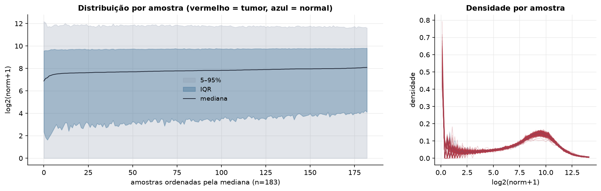
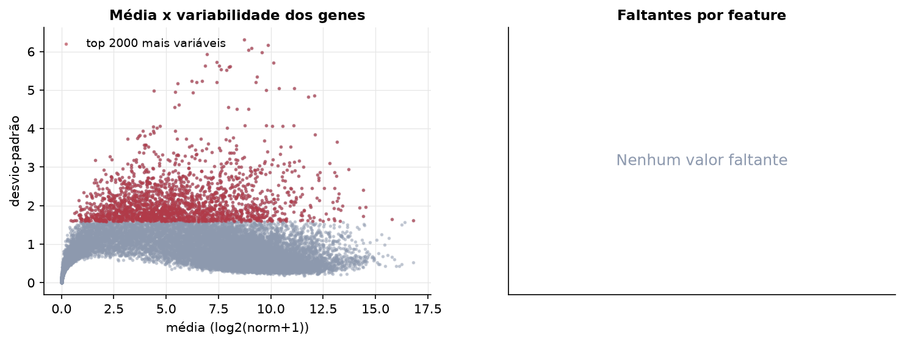
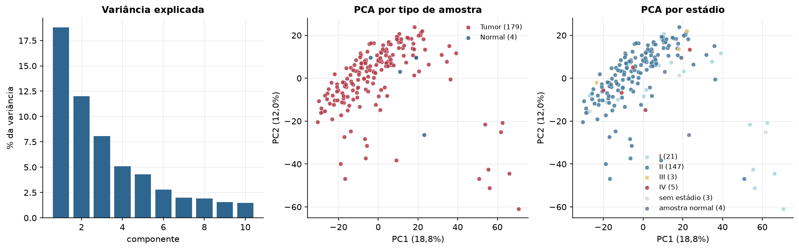
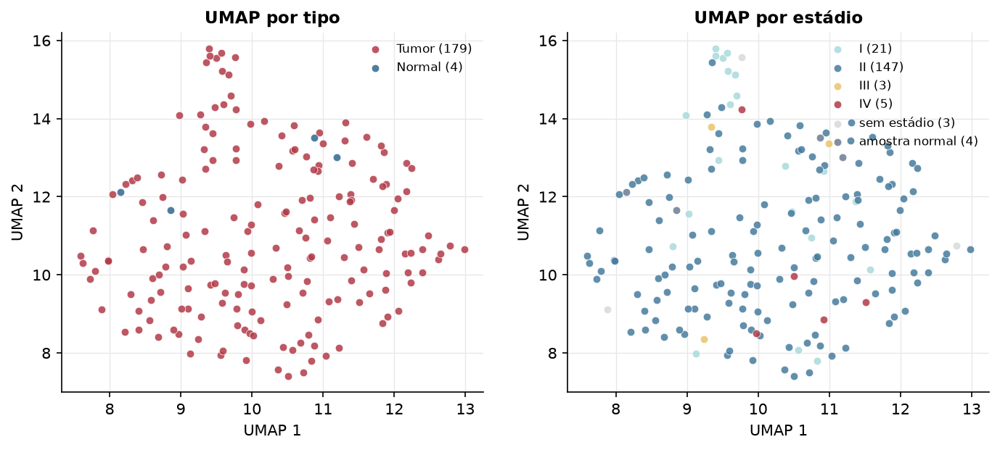
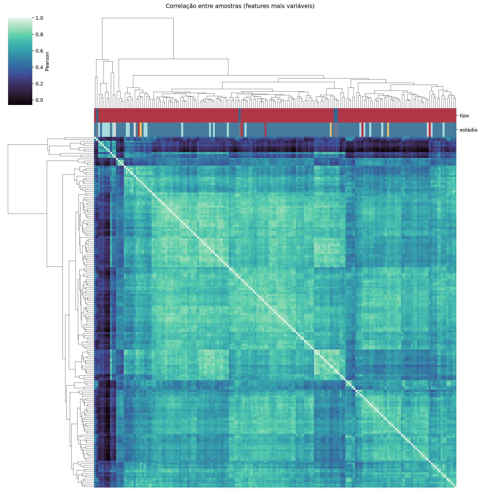
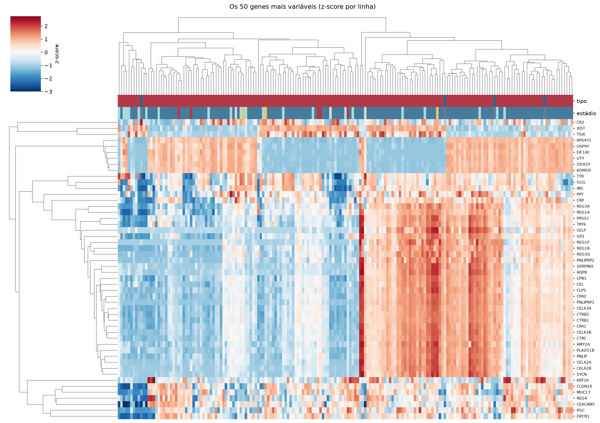
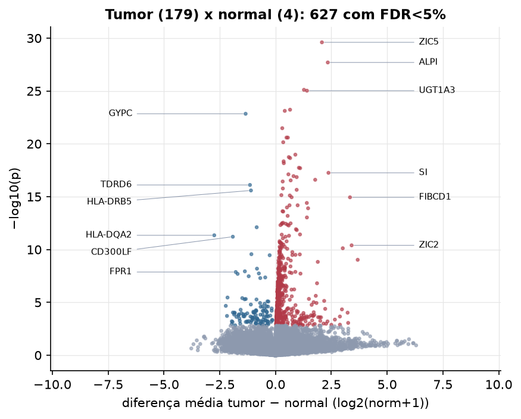
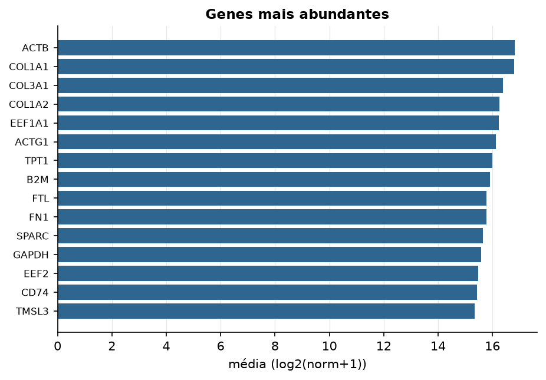

PAAD · RNA-seq (PanCanAtlas)
Illumina HiSeq, RSEM normalizado e corrigido por lote (EB++), log2(x+1) · gerado em 22/10/2026 02:29
20.531genes
179amostras tumorais
4amostras normais
0,0%valores faltantes
Fonte: PanCanAtlas EB++ via API do Xena
Estes valores já vêm normalizados e com correção de lote entre plataformas e centros. Servem bem para modelos gaussianos ou redes neurais; para um modelo de contagem use as contagens brutas do GDC.
Principais resultados
- 20.531 genes medidos em 183 amostras (179 tumorais e 4 normais); 0,0% dos valores estão faltando.
- Os dois primeiros componentes principais explicam 18,8% e 12,0% da variância das features mais variáveis.
- Correlação mediana entre amostras: 0,66.
- Amostras com correlação muito abaixo das demais (possíveis outliers técnicos): TCGA-2J-AABP-01, TCGA-2L-AAQM-01, TCGA-3A-A9IJ-01, TCGA-3A-A9IL-01, TCGA-3A-A9IN-01, TCGA-3A-A9IO-01, TCGA-3A-A9IR-01, TCGA-3A-A9IS-01, TCGA-3A-A9IV-01, TCGA-H6-A45N-11.
- Tumor x normal: 627 genes diferentes com FDR < 5% (512 maiores no tumor, 115 maiores no normal; 4 pacientes têm o par tumor-normal).
- Mais aumentados no tumor: ZIC5, ALPI, KLHL1, UGT1A3, MAS1L, FAM154A, SRP68, DNAJB3.
- Mais reduzidos no tumor: GYPC, TDRD6, HLA-DRB5, ADAMTS3, HLA-DQA2, CD300LF, ARHGAP22, C1orf144.
- Associações clínicas com p < 0,05 nos componentes principais: PC1 com estádio (p=0.0056); PC3 com sexo (p=0.045); PC1 com sobrevida (p=8e-05).
- Em mediana, 84,1% dos genes têm expressão acima de log2(norm+1)=1 em cada amostra.
Distribuição dos valores


Estrutura das amostras




Tumor x normal

Features mais diferentes entre tumor e normal
| diferenca_tumor_menos_normal | t | p | fdr | |
|---|---|---|---|---|
| ZIC5 | 2.078 | 13.939 | 2.47e-30 | 4.97e-26 |
| ALPI | 2.342 | 13.284 | 1.99e-28 | 2e-24 |
| KLHL1 | 1.274 | 12.395 | 7.73e-26 | 4.69e-22 |
| UGT1A3 | 1.408 | 12.367 | 9.35e-26 | 4.69e-22 |
| MAS1L | 0.651 | 11.747 | 5.89e-24 | 2.37e-20 |
| FAM154A | 0.414 | 11.709 | 7.57e-24 | 2.53e-20 |
| GYPC | -1.34 | -16.412 | 1.43e-23 | 4.09e-20 |
| SRP68 | 0.302 | 11.134 | 3.31e-22 | 8.3e-19 |
| DNAJB3 | 0.492 | 10.831 | 2.55e-21 | 5.15e-18 |
| PAICS | 0.553 | 14.182 | 2.57e-21 | 5.15e-18 |
| C3orf43 | 0.345 | 10.676 | 7.04e-21 | 1.28e-17 |
| GPR78 | 0.888 | 10.262 | 1.05e-19 | 1.76e-16 |
| TEX19 | 0.596 | 10.18 | 1.79e-19 | 2.77e-16 |
| CNPY1 | 0.654 | 10.148 | 2.21e-19 | 3.17e-16 |
| FLJ43950 | 0.363 | 10.038 | 4.52e-19 | 6.05e-16 |
| RBMXL2 | 0.371 | 9.975 | 6.77e-19 | 8.49e-16 |
| SLCO1B1 | 1.048 | 9.821 | 1.83e-18 | 2.16e-15 |
| EVX1 | 1.103 | 9.807 | 2e-18 | 2.23e-15 |
| SI | 2.372 | 9.649 | 5.52e-18 | 5.83e-15 |
| WFDC5 | 0.577 | 9.598 | 7.66e-18 | 7.69e-15 |
| SPINK7 | 0.808 | 9.536 | 1.13e-17 | 1.08e-14 |
| GNGT1 | 0.948 | 9.503 | 1.4e-17 | 1.28e-14 |
| APOC3 | 1.777 | 9.412 | 2.51e-17 | 2.19e-14 |
| FETUB | 0.679 | 9.391 | 2.86e-17 | 2.39e-14 |
| C20orf144 | 0.321 | 9.353 | 3.64e-17 | 2.93e-14 |
| TDRD6 | -1.146 | -11.807 | 7.76e-17 | 5.99e-14 |
| HCRTR2 | 0.328 | 9.112 | 1.67e-16 | 1.24e-13 |
| FXYD4 | 0.947 | 9.065 | 2.23e-16 | 1.6e-13 |
| HLA-DRB5 | -1.101 | -9.144 | 2.57e-16 | 1.78e-13 |
| TAS2R50 | 0.262 | 8.88 | 7.13e-16 | 4.77e-13 |
Associação com variáveis clínicas
p-valores da associação dos três primeiros componentes principais (só tumores) com estádio (Kruskal-Wallis), sexo (Mann-Whitney), idade (Spearman) e sobrevida global (Cox univariado).
| estádio (Kruskal) | sexo (Mann-Whitney) | idade (Spearman) | sobrevida OS (Cox) | |
|---|---|---|---|---|
| PC1 (19,1%) | 0.006 | 0.561 | 0.254 | 7.96e-05 |
| PC2 (12,2%) | 0.089 | 0.327 | 0.983 | 0.088 |
| PC3 (7,9%) | 0.857 | 0.044 | 0.206 | 0.638 |
Mais abundantes
